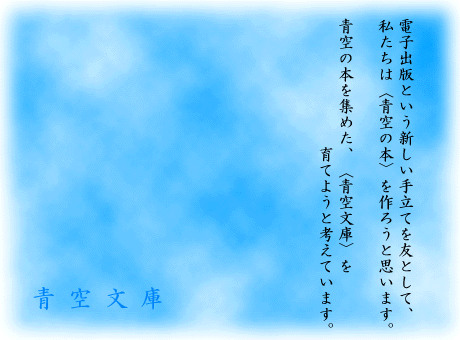

「本を電子化して、誰でも読めるようにしておくと面白い」
そう考えた者が数人集まって、1997年７月に青空文庫が生まれました。
開始当初に並べられたのはほんの数作品でしたが、そのあと、同じような作業に取り組みたい、と手を挙げてくれるボランティアが次々と現れて、輪が広がり、やがてインターネット上の電子図書館としても知られるようになりました。
青空文庫は、インターネットさえあれば誰にでもアクセスできる〈青空〉をひとつの公開書架として、自由な電子本を集める活動です。この青空の書架（Open Air Shelf）には、自由に読め、自由に取り扱え、また自由に新たな作品やサービスを始められる、そのような〈生きた本〉が、ボランティアの皆さんの自発的な作業によって収められています。
個人の蔵書から、公共図書館から、あるいは本人の筆から生まれた電子テキストが、今もこつこつと棚に並べられています。そのなかには、著作権保護期間の終わった作品のほか、著者・訳者自らが公開に同意したものも含まれています。そして〈青空の本〉は、国や団体・人を問わず、様々なところで活用されています。
とはいえ、青空文庫がどのような仕組みで成り立っているのか、よく知られてはいません。ここでは、青空文庫という活動がどのように運営されているのか、どのような作業をしているのか、はたまた財政はどうなっているのか、その３点を説明いたします。
青空文庫は、インターネット上のボランティア活動です。よく誤解されますが、青空文庫は当初より明確な代表を置いていません。
現在、青空文庫は次のような運営体制で動いております。名称だけではわかりにくい、との指摘もたびたびいただいておりますので、学校の部活動になぞらえて簡単な解説も付記いたしします。
日々あるいは余暇の時間を活用して、入力・校正などを世界・全国各地で行ってくださっている、青空文庫のボランティアのみなさま（部員）です。作業を始めたばかりの新人さんから長年ご協力いただいているベテランの方まで、また継続的に活動してらっしゃる方から、まとまった時間のできたときだけやるという人まで、関わり方は様々です。個人での作業が一般的ですが、グループワークという形で団体名義での活動をしてくださっているところもあります。
学校の部活動でいうところの顧問に当たる立場になります。工作員・耕作員の活動をサポートしつつ、必要なときには全体に関わる判断や承認をします。
部活動でいうところのレギュラー部員です。ボランティアのみなさんからの入力・校正希望に対する受付と、入力・校正してくださった作品の受領、また公開ファイルの作成を行っており、様々なご質問にも受け答えしています。
部活動でいう渉外に当たり、青空文庫へ各方面から寄せられた取材や相談を、中心となって対応する役になります。
青空文庫の運営資金を管理する役です。サーバ費用や底本購入費・消耗品費・外部校正費などの支払いや、外部からの広告・寄付の受入れなどをしています。また青空文庫は、ネットを通じて人の集まっているボランティア団体ですが、見なし法人として法人税等も納付しています。
青空文庫では、データベースを活用してサイトが運営されており、その管理などを行う役になります。部活動でいうとマネージャーでしょうか。
入力・校正以外にも、あらゆる形で青空文庫を支援してくださっている方々がいます。分野別リストをはじめ、各まとめページやツール・アプリの開発、ミラーサーバ・メールサーバの技術提供など、様々なご協力があって今が成り立っております。
運営も呼びかけ人以下Ｗｅｂ管理までの全員がボランティアで、工作員・耕作員のなかから手を挙げた方がその役目を無償で担っています。そして、ただいま青空文庫には大きく分けてふたつのメールアドレスがあります。info は上記のなかでも呼びかけ人・広報・会計・Ｗｅｂ管理の担当者に、reception は呼びかけ人・点検グループに届くようになっております。
今では、〈青空文庫〉という名称が、ボランティア活動そのものだけでなく、パブリック・ドメインを共有するための様々なあり方に対して、広く用いられることがあります。〈青空文庫〉という言葉のそもそもの始まりである「青空文庫の提案」もご一読ください。また疑問点については、「青空文庫ＦＡＱ」（https://www.aozora.gr.jp/guide/aozora_bunko_faq.html）もご覧ください。
青空文庫では、ボランティアの皆さんが以下の作業を一つ一つしていくことで、作品公開に至っております。
１．入力希望者が、取り組む作品を選び、入力する底本を確保する
２．受付システムから、入力を申請する
３．点検グループが、作品が登録可能か、さらに電子化できる底本なのかをチェックして、受付する
４．入力のお願いメールが申請者に届く
５．底本を元に、申請者（とその協力者）が作品を、マニュアルに従って電子テキストファイル（以下、ファイル）にする
６．入力の終わったファイルを、奥付の画像とともに受付アドレスに送付する
１．点検グループが、送付されたファイルが青空文庫の注記形式に沿っているか、チェックする
２．必要なら、入力者に対して気づいたことをフィードバックする
３．送付ファイルを校正可能な状態に整える
１．校正希望者が、取り組む作品を選び、校正する底本を確保する
２．受付システムから、校正を申請する
３．点検グループが、校正するファイルを申請者に送る
４．ファイルの添付されたメールが、申請者に届く
５．底本を元に、申請者（とその協力者）が作品の入力に間違いがないか校正する
６．校正の終わったファイルを、校正履歴ともに受付アドレスに送付する
１．点検グループが、送付されたファイルに問題がないか、確認する
２．必要なら、校正者に対して気づいたことをフィードバックする
３．送付ファイルから、公開されるファイルを準備する
４．作品の公開日を設定し、その当日が来ると青空文庫のサイト上で作品のファイルが共有可能になる
青空文庫の活動には、様々な経費がかかっています。専従者を置かないボランティア活動のため、運営に関わる人件費はただいまゼロですが、サイトを管理するサーバの維持費のほか、作品を収めるデータベースや作業に関わるソフトウェアの開発費用、また電子テキストの元となる底本の購入代、なかなか公開されない作品の外部委託校正費など、必要な支出はけして少なくありません。（その会計については、「会計報告」（https://www.aozora.gr.jp/kaikei/index.html）のページで、その詳細を公表しています。）
ただし青空文庫は非営利の活動ですので、原則として資金を営利的に得ることはありません。そのため様々な方法で、資金確保につとめてきました。その主なものを、以下に記します。
青空文庫のトップやその他のページには、いくつかの広告が出稿されており、その収入が長年、大きな資金源となっています。青空文庫のコンテンツを利用する企業のなかには直接対価を支払いたいとおっしゃるところもありますが、青空文庫は非営利としてこれを固辞し、代わりにサイトに広告を出していただくことで、本そのものとは関わりのないところでのやりとりが成立するよう心がけています。そのため、現時点では読書の妨げになる形での広告表示は考えておりません。
2013年８月に当文庫の呼びかけ人・富田倫生さんが急逝したことを受けて、青空文庫への継続的な支援を目的として基金が設立されました。この基金の募った寄付金は、必要経費（青空文庫への支援活動の経費含む）をのぞいて、青空文庫の助成に当てられる予定です。詳しくは、「本の未来基金」のサイト（http://honnomirai.net/）をご覧ください。
青空文庫は、自立した運営を目指すためにも、自ら資金を得られるようにも努めています。設立初期には、文字コードを扱う団体として研究プロジェクトを進めたり、電子図書館としてのＣＤ－ＲＯＭ配布計画を実行したりすることで、助成金や活動支援金を得てきました。今後も公募の助成金・支援金を、積極的な資金確保の手段として検討していくつもりです。
これまで個人による寄付も、青空文庫へ直接という形で、たびたび受けて参りました。ただし運営上の都合もあり、今後の寄付については「本の未来基金」にお任せしようと考えています。
ボランティア活動の参加者や協力者、あるいはその趣旨に賛同する個人・企業からの持ち出しという形で、有形・無形のものが提供されることで、青空文庫の活動費が抑えられています。ボランティアの基本理念ではありますが、青空文庫の初期から、その活動を支える大きな柱のひとつとなっています。
あらためて、皆様のご厚意に感謝する次第です。
過去の「青空文庫のしくみ」については、こちら（https://www.aozora.gr.jp/shikumi.html）にあります。